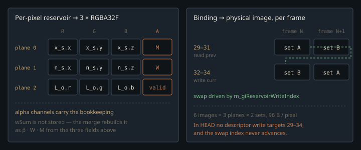

Monograph · Tree · ← Module hub · ReSTIR GI reservoirs
path-tracer
ReSTIR GI reservoirs
Ping-pong reservoir planes on bindings 29–34.
Keeping the sample instead of the average
A one-sample diffuse bounce does not fail as pixel grain. It *boils*: every frame the cosine ray lands somewhere else, the wall's indirect term jumps, and accumulation smears it into a crawling stain. Averaging cannot help — an averaged colour is welded to the shading point that produced it.
ReSTIR (Ouyang et al. 2021) carries the **sample** instead: the vertex the bounce ray hit, its normal, the radiance leaving it, and enough bookkeeping to re-weight it for the surface the pixel is shading now. A sample can be re-evaluated at a new shading point; a colour cannot. Hence six full-resolution images and a block of the descriptor set.
Twelve floats, three planes
Six fields: the secondary vertex `x_s`, its normal `n_s`, the outgoing radiance `L_o` toward the primary hit, the RIS weight sum `wSum`, a confidence count `M`, and the contribution weight `W`.
struct GIReservoir {shaders/rt/pt_raygen_realtime.rgen:213Only five are persisted. Three RGBA32F planes give twelve floats: three `vec3`s in RGB, and in the alphas `M`, `W`, and a validity flag set only where the primary ray hit geometry. `wSum` is dropped — a stored reservoir re-enters the stream with weight `p̂ · W · M`, reconstructible from the rest.
The planes are allocated twice — read as *prev*, written as *curr* — so a single raygen dispatch can read-modify-write without aliasing itself:
// --- ReSTIR GI reservoir ping-pong: 3 RGBA32F planes × 2 (curr/prev) ---ohao/render/rt/path_tracer_images.cpp:265They occupy a contiguous six-binding block in the path tracer's set 0: 29–31 prev, 32–34 curr.
for (uint32_t b = 29; b <= 34; ++b) {ohao/render/rt/path_tracer_descriptors.cpp:192The price is unconditional: six `R32G32B32A32_SFLOAT` images at render resolution — 96 bytes per pixel, roughly 190 MiB at 1920×1080.

The weight that makes a reused sample legal
Resampled importance sampling draws $M$ cheap candidates $x_i$ from a source pdf $p$, then keeps one survivor $y$ in proportion to a *target* $\hat p$ closer to the integrand than $p$ is:
$f$ is the diffuse GI at the primary hit $x_1$ — $(\rho/\pi)\,L_o\cos\theta$, for $\rho$ the diffuse albedo (zero on metals) and $\theta$ the angle between the normal and the direction to $x_s$; $p$ is the cosine-hemisphere pdf $\cos\theta/\pi$ the bounce was drawn from; $\hat p$ is a scalar stand-in for $f$, its luminance:
return giLum((albedoD / OHAO_PI) * Lo * cosT);shaders/rt/pt_raygen_realtime.rgen:234Everything right of $f(y)$ collapses into the number stored as $W = (\sum w_i) / (M\,\hat p(y))$, so shading is just $f(y)\cdot W$:
merged.W = (pHatHeld > 0.0 && merged.M > 0.0) ? merged.wSum / (merged.M * pHatHeld) : 0.0;shaders/rt/pt_raygen_realtime.rgen:1665`M` counts candidates, not frames: the N-samples-per-frame loop streams each initial bounce into one reservoir before any reuse —
giReservoirUpdate(giCurr, xs, ns, Lo, w_i, rSel);shaders/rt/pt_raygen_realtime.rgen:1547— but only the bounces that *hit* something. That call is the sole `r.M += 1.0` and sits in the else-branch; a cosine ray escaping to the environment goes straight into the shaded result:
giEnvMissTotal += giAlbedoD * payload.color;shaders/rt/pt_raygen_realtime.rgen:1406So `M = N` in a closed box, and less under an HDRI.
Re-evaluating the target is the entire correctness argument
The stored reservoir re-enters the stream with weight $\hat p'(y)\cdot W\cdot M$, where $\hat p'$ is the target **re-computed at the current shading point** — not the $\hat p$ in force when it was taken:
float pHatPrev = giTargetPHat(giAlbedoD, firstHitNormal,shaders/rt/pt_raygen_realtime.rgen:1629Two guards sit on top. The reprojected pixel must clear the geometry gate the beauty accumulation uses — position within `max(0.03, 0.02·d)`, normal dot ≥ 0.9, roughness delta ≤ 0.12 — so a disocclusion cannot inherit a stranger's sample. And a shadow ray from $x_1$ to $x_s$ zeroes $\hat p'$ when the reused vertex has become occluded, stopping light bleeding through a wall that closed between frames:
if (payload.hitDist >= 0.0) pHatPrev = 0.0; // occludedshaders/rt/pt_raygen_realtime.rgen:1643Inherited confidence is then clamped to twenty times the current frame's:
float mClamped = min(prevR.M, 20.0 * giCurr.M);shaders/rt/pt_raygen_realtime.rgen:1647That clamp also bounds the bias, because both combiners are M-weighted, not MIS-weighted: a candidate enters carrying $\hat p\cdot W\cdot M$, no balance term. The shader calls the temporal one biased — unbiased only in the limit, and only because that reuse is same-domain —
// Combiner is the biased M-weighted RIS combiner (unbiased in the limit forshaders/rt/pt_raygen_realtime.rgen:1580— and repeats the label for the spatial fold, where the sample crosses to a different primary hit and that argument lapses:
// --- Fold neighbor into the spatial reservoir (biased M-combiner × J).shaders/rt/pt_raygen_realtime.rgen:1753GRIS pairwise or generalized-balance weights would remove it; none are computed here.
`W` is neither a colour nor a probability. It is the scalar that re-weights a sample taken for a *different* shading point — valid only because $\hat p$ was recomputed against the current surface. Cache the old $\hat p$ and the reservoir becomes a slow, wrong blur that looks plausible.
Spatial reuse rides one frame behind
Phase 2 folds in K = 4 neighbours from a screen-space disk whose radius shrinks 15 % per tap — 20, 17, 14, 11 px:
float rr = RADIUS * (1.0 - 0.15 * float(k)) * sqrt(du.x);shaders/rt/pt_raygen_realtime.rgen:1707Its centre is not this pixel but the primary hit reprojected into the *previous* frame's screen space — the frame those reservoirs belong to — or `pixel` if that reprojection leaves the frame:
baseCenter = clamp(ivec2(sUV * vec2(pc.params.xy)),shaders/rt/pt_raygen_realtime.rgen:1697A neighbour's sample was integrated over *its* solid angle at *its* primary hit, so reuse needs the change-of-measure Jacobian (Ouyang et al. Eq. 11):
$x_{1r}$ is this pixel's primary hit, $x_{1q}$ the neighbour's; each $\phi$ is the angle at $x_s$ between $n_s$ and the direction back to the corresponding primary hit. Without $J$, samples reused across a depth or grazing-angle discontinuity are weighted as if they subtended the same solid angle at both receivers — silhouettes band light or dark. The ratio is then clamped to $[10^{-3},10^{3}]$ as numerical insurance:
return clamp(J, 1e-3, 1e3); // numerical safety only (rarely active)shaders/rt/pt_raygen_realtime.rgen:254One raygen dispatch covers the whole ReSTIR pipeline, so a thread's neighbours have no current-frame reservoirs yet. The textbook fix is a second pass with its own pipeline, SBT and descriptor plumbing. The engine instead reads the previous frame's temporal reservoirs at 29–31 with their surface and shading history: spatial reuse for zero new GPU passes, one frame stale. Under a moving camera that cost is never paid — reuse stops entirely.
Both paths carry the same `!viewChanged` gate:
bool giReuse = (!restirGiOff) && (historyFrameCount > 0u) && (!viewChanged)shaders/rt/pt_raygen_realtime.rgen:1590bool spatialOn = (!restirGiOff) && (!restirGiNoSpatial)shaders/rt/pt_raygen_realtime.rgen:1686`viewChanged` is `pc.control.z`, from `m_viewChangedThisFrame`: `notifyViewChanged()` raises it, `render` clears it each frame, `interactive` sets it whenever the camera moved. A continuously moving camera therefore runs neither pass; what surfaces is a noisy single-frame RIS estimate, not stale-neighbour lag.
Only the *temporal* reservoir goes back to the ping-pong planes, captured before any neighbour is folded in; the spatial result is shading-only:
imageStore(currGIReservoir0, pixel, vec4(merged.xs, merged.M));shaders/rt/pt_raygen_realtime.rgen:1668GIReservoir spatialR = merged; // seed with r's temporal reservoirshaders/rt/pt_raygen_realtime.rgen:1685The wiring HEAD no longer has
Everything above is live GLSL and the layout still reserves 29–34, but the host code that joined them is gone: the descriptor update in `PathTracer::render` builds a 29-entry write array and stops at binding 28, and no `dstBinding` above 28 exists anywhere in the tree.
VkWriteDescriptorSet writes[29] = {};ohao/render/rt/path_tracer_render.cpp:160`m_giReservoirViews` appears only at image creation and destruction, no barrier moves those images to `VK_IMAGE_LAYOUT_GENERAL`, and `m_giReservoirWriteIndex` is assigned `0` in three places and incremented in none — the ping-pong cannot alternate. The shader's four `PT_FLAG_RESTIRGI_*` bits, 5–8 of `pc.control.x`, are set by nothing.
No commit deleted this. The merge `c894ebf` took `path_tracer_render.cpp` from a branch forked at `1910fd9`, two hours before ReSTIR landed in `cd87dea`: parent `a726db3` still holds `writes[40]` and a live `m_giReservoirWriteIndex = 1u - m_giReservoirWriteIndex`; the merge result holds neither, and `cornell_box` drops from nine `restir` matches to one, `restir_probe` with it.
Bindings 29–34 carry no `PARTIALLY_BOUND` flag — that is on binding 12 alone — so this is not a legal "optional descriptor" configuration. A statically-used descriptor that is never written is undefined behaviour; what a driver does with it is not characterised here.
Two sharp edges in the layout
The storage-image pool is sized to exactly the 25 storage-image bindings, six of them reservoir planes:
{VK_DESCRIPTOR_TYPE_STORAGE_IMAGE, 25}, // +1 MV (3.A), +2 depth/roughness (3.B), +2 diff/spec radiance (3.C), +2 albedo/specColor (3.C.6), +1 normalRoughness (4.B), +2 denoised out (4.C), +6 ReSTIR GI reservoir (29-34), +1 spec hit-dist (35)ohao/render/rt/path_tracer_descriptors.cpp:230No slack: a 26th storage image added without editing that literal fails `vkAllocateDescriptorSets` with `VK_ERROR_OUT_OF_POOL_MEMORY` at startup, nowhere near the cause.
The second edge predates ReSTIR but the reservoir block widened it. Vulkan requires `VARIABLE_DESCRIPTOR_COUNT` on the set's highest-numbered binding; here it sits on the bindless texture array at 12, with 23 higher-numbered bindings above:
bindingFlags[12] = VK_DESCRIPTOR_BINDING_VARIABLE_DESCRIPTOR_COUNT_BITohao/render/rt/path_tracer_descriptors.cpp:208The comment directly above that line still claims the flag is on "the LAST binding only".
Contracts
- $\hat p$ must be re-evaluated at the current primary hit before the held sample is shaded. Reusing the stored $\hat p$, or a stale `W`, distorts the GI while still looking smooth.
- The spatial pass must not write back into the ping-pong planes; persisting it compounds sample correlation until the GI bakes.
- Bindings 29–34 must be written every frame with prev/curr swapped and the images in `VK_IMAGE_LAYOUT_GENERAL` before the raygen runs. Neither happens in HEAD.
- The `{STORAGE_IMAGE, 25}` entry is exact: bump it with `bindings[36]`, `flagsInfo.bindingCount` and `layoutInfo.bindingCount`. The `29..34` loop assumes array index equals binding number.
Source files
shaders/rt/pt_raygen_realtime.rgenohao/render/rt/path_tracer_images.cppohao/render/rt/path_tracer_descriptors.cppohao/render/rt/path_tracer_render.cppParent hub for the full pipeline narrative; this page is the file-level design unit. Sitemap · hover glossary terms anywhere.